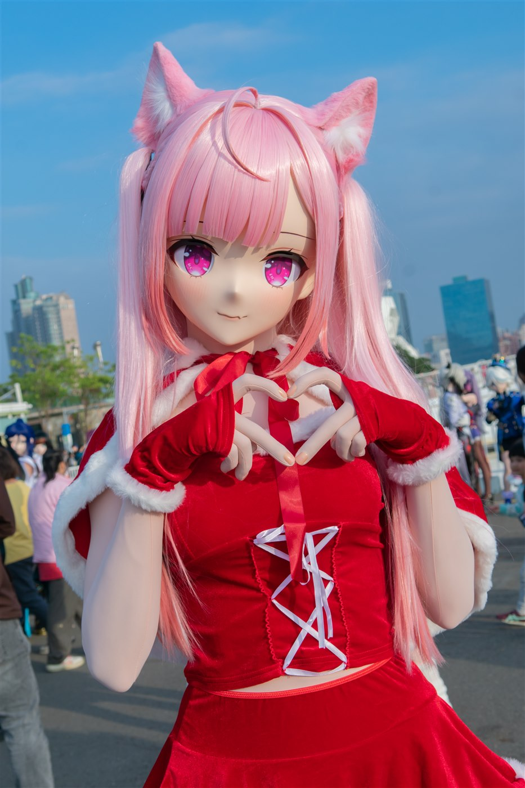
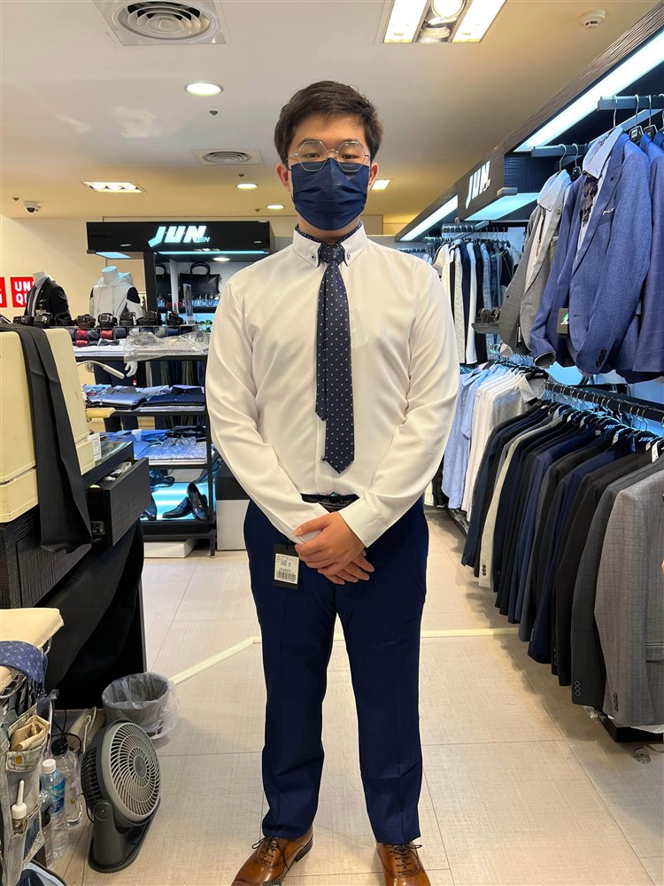

可動人偶
角色、造型與姿態，是我喜歡探索的日常興趣。
3D AVATAR · PHOTOGRAPHY · CREATION
你好，我是簡敬倫。はじめまして。
把握當下，不留遺憾。
從一個模型，到螢幕前的每個表情。
用 3D 塑造角色，也用鏡頭收藏生活。

01 / ABOUT ME
私について

我是簡敬倫，
一位持續精進中的 3D 角色創作者。
目前就讀四資四B，投入 3D VTuber 直播角色製作。對我來說，創作不只停留在模型完成的那一刻，也包含它如何呈現表情、如何活動，以及最後如何出現在直播畫面裡。
我曾獨立完成 A01、幽李鈴與蘇蘇的 3D 建模，也參與改模修復，以及伊索度演唱會專案的模型調整與重製。從建模、貼圖、表情到骨骼，這些都是我累積過的製作經驗。
「把握當下，不留遺憾。」把想做的事，慢慢做成看得見的成果。
02 / INTERESTS & SKILLS
可動人偶、攝影、音樂，還有咖啡。
我的日常，也有不同的觀看角度。
角色、造型與姿態，是我喜歡探索的日常興趣。
透過鏡頭留下角色的細節，也記錄光線與色彩。
聽歌是興趣，咖啡是日常。咖啡續命中。
MY TOOLKIT
持續精進 3D Avatar 製作與 2D 繪圖能力。
03 / SELECTED WORKS
建模、改模與舞台上的成果。
每個作品，都是製作歷程的一部分。
獨立完成角色 3D 建模，從製作畫面到實際直播，呈現角色在不同階段的樣貌。
獨立完成角色 3D 建模，以製作畫面展示角色造型與模型細節。
獨立完成角色 3D 建模，呈現不同於其他作品的角色比例與造型。
協助既有模型的修改與修復，這件作品展示的是我參與調整的部分。
REWORK → ON STAGE
負責角色模型的調整與重製，約 80% 的模型內容重新製作。作品呈現模型投入演出後的成果；我的負責範圍為模型部分。
角色與專案圖片：本人提供的製作／直播截圖。角色相關權利歸各權利人所有；各作品以標示之個人負責範圍為準。
04 / WHAT'S NEXT
これからのこと
朝向 3DCG 動畫與音樂 MV。
從角色製作出發，我希望未來能創作動畫或音樂 MV，讓模型不只是展示，也成為故事與音樂的一部分。
學習路線提案 / 待實踐
精進角色製作持續練習 3D Avatar 與 2D 繪圖。
累積動態練習以短片段練習角色動作、鏡頭與燈光。
串起音樂與故事以一段短篇 3DCG 或 MV 作為練習方向。